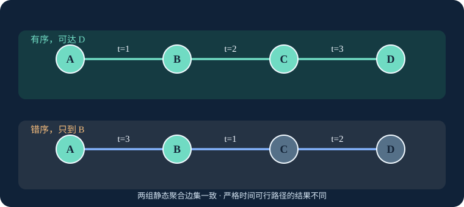

TEMPORAL NETWORKS / EVENT ORDER · CAUSAL PATHS
网络里的静态路径存在，不代表消息有时间顺序可走。
静态图中有 A–D 的路径，消息为什么可能永远传不到 D？
如果把一个月内所有通话都看成“不同时刻曾接触过”的边，A–B–C–D 可以是一条完整的静态路径。但消息必须先在 A 与 B 通话时传给 B，之后 B 才能在与 C 的通话中传给 C，最后 C 才能传给 D。事件发生的顺序如果颠倒，静态连接并不能保证时序上可行。

事件序列与时间切片有什么区别？
一种表示是事件网络：每条接触保留参与节点、发生时间，必要时还要保留持续时长与方向，例如 (A,B,t=1)。另一种表示是快照网络：在一个时间窗里把所有发生过的边聚合成 Gₜ。事件粒度保留先后顺序；快照适合比较不同时间的总体结构，但它已经丢掉了窗内发生的具体顺序。
| 表示 | 保存什么 | 容易丢失的东西 |
|---|---|---|
| 静态聚合 | AB、BC、CD | 发生顺序与重复接触 |
| 时间快照 | 某个时间窗中的边 | 窗内精确先后关系 |
| 接触事件列表 | (u,v,t) | 若缺乏持续时间，无法重建持续连接 |
| 带持续时间的事件 | (u,v,start,end) | 仍须给出允许等待与跨事件传递规则 |
Holme 与 Saramäki 的时间网络综述强调：网络中的传播路径不能仅凭静态聚合图来定义。使用更短时间窗并非总能解决问题，因为窗内也可能有多个先后相反的事件。
时间可行路径：每一步必须发生在消息到达之后
设接触序列为 (v₀,v₁,t₁)、(v₁,v₂,t₂)、…，本章假设事件是瞬时、无向、单步传递，允许节点中途等待，但同一个时间戳不允许一次事件刚收到的消息立刻通过另一事件继续传播。因此严格要求：
为什么使用严格小于而不是小于等于？这是本章为了防止同一时间戳下隐含瞬时多跳而规定的事件语义。其他研究可能允许同时发生或使用不同的事件持续时间与等待规则；若改变约定，应重写可行性判断和测试。时间有向关系也需要把边方向加进条件。
把在 t₀ 时刻已经持有消息的节点设为 A，t₀=0。对有序计划，A–B@1、B–C@2、C–D@3，最早到达时间依次为 A:0、B:1、C:2、D:3。错序计划 B–C@1、C–D@2、A–B@3，则 A 只有在 t=3 才能首次把消息传给 B，之后已经没有 B–C 接触。
不改动拓扑，只切换事件时间
比较三份接触计划
严格时间递增：A@0 → B@1 → C@2 → D@3。静态图的距离始终是 3 条边。
同时发生的三条接触若均在 t=1，按本章严格递增规则，A 只能在 t=1 到达 B，不允许在同一个 t=1 继续借 B–C、C–D 两步传到 D；只有采用明确的其他同步语义才可能得到不同结果。
时间距离不等于静态最短路距离
静态最短路 d_static(A,D)=3，度量的是三条边；时间最早到达 a(A,D) 度量的是时间戳。若在 t₀=0 出发，最早到达耗时为 a−t₀。没有时间可行路径时，时间距离可设为 +∞ 或“不可达”，不能用静态图的 3 代替。
这里 𝒯(s,v) 是从 s 到 v 的时间可行路径集合。空集合的最小值在此约定为不可达。与静态图不同，时间网络的到达可行性可能不对称：A 能在指定窗口内到 B，不意味着 B 从另一个出发时刻同样能回到 A。
怎样可靠计算最早到达？
对严格递增、瞬时、无向事件，按时间排序扫描。每一个时间戳 t 到来时，先保存扫描前已知的到达信息，使用这份快照来判断能否通过该时间戳上的事件，之后统一更新到达表。这样即使多个事件共享同一时间戳，也不会凭程序的行遍历顺序创造虚假的多跳。
这项规则也保护时序链路预测评估：未来 t>t₀ 的事件必须与训练特征严格隔离，否则一个事件的未来发生时间被编码进当前状态，会造成时间泄漏。
代码：用事件扫描检验有序、错序与同时发生
运行环境 Python 3.11+，只使用标准库；用 NetworkX 3.3+ 构造静态聚合图进行独立对照。显式保存每个时间戳之前的到达表，防止同一时间内错误连跳。
import networkx as nx
ordered = [("A","B",1),("B","C",2),("C","D",3)]
scrambled = [("A","B",3),("B","C",1),("C","D",2)]
same_time = [("A","B",1),("B","C",1),("C","D",1)]
def earliest(events, origin="A", start=0):
arrival = {origin: start}
for t in sorted({t for _,_,t in events}):
previous = dict(arrival)
pending = dict(arrival)
for u,v,when in events:
if when != t:
continue
for source,target in ((u,v),(v,u)):
if previous.get(source,float("inf")) < t:
pending[target] = min(pending.get(target,float("inf")),t)
arrival = pending
return arrival
assert earliest(ordered) == {"A":0,"B":1,"C":2,"D":3}
assert earliest(scrambled) == {"A":0,"B":3}
assert earliest(same_time) == {"A":0,"B":1}
for events in (ordered,scrambled,same_time):
flat = nx.Graph((u,v) for u,v,_ in events)
assert nx.shortest_path_length(flat,"A","D") == 3
print("ordered arrival:",earliest(ordered))本实验检验严格递增时间、无向瞬时接触、允许等待的规则；不模拟不同传播速率、容量、消息丢失或持续连接。路径可行与传播一定发生仍是两回事。
研究级交叉验证：时间尊重路径和数据切分是两项不同门禁
严格递增时间接触路径限制消息能否顺序传播；模型训练截止限制可访问哪些事件。A–B@1 和 B–C@1 在本页的“同时间批次冻结”规则下不能让 A 同时刻到达 C；即使存在时间尊重路径，也不能提前读取未来测试标签。
同一套 Python 数值 oracle 与浏览器交互对照合规图、故意泄漏图、严格时间路径和图传播系数。查看跨章实验与可复算反例 →
时间网络的主要来源
- Holme & Saramäki (2012), Temporal networks, Physics Reports 519(3):97–125。
- Pan & Saramäki (2011), Path lengths, correlations, and centrality in temporal networks。
- Masuda & Lambiotte (2016), A Guide to Temporal Networks，时间网络方法的扩展背景。
保留事件时间，可以让结构、动力学和预测共享同一份因果顺序。下一章将进入网络表示学习，进一步讨论如何把不同结构编码成机器学习可用的特征。